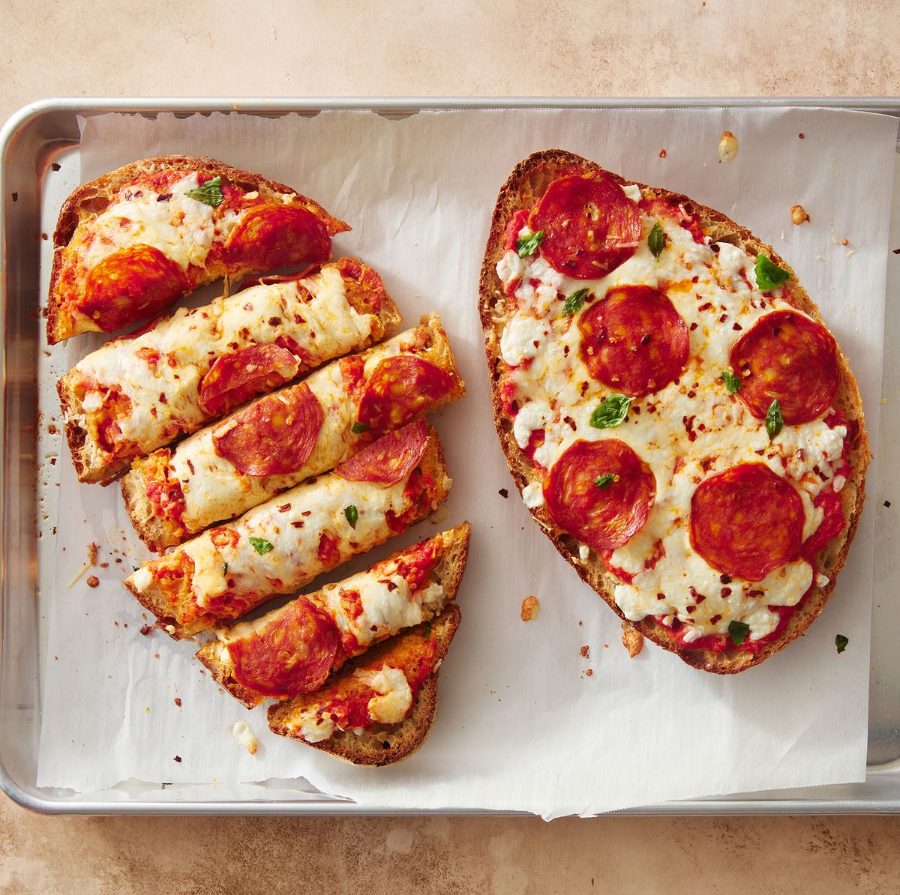

French Bread Pizza

Description
Instead of dealing with pizza dough, we use a loaf of French bread to create our pizza!
The "crust" that forms will be crispy on the outside, while staying nice and soft on the inside. While it's delicious as is, we decided to take things a step further.
We brushed our French loaf with garlic butter here to create a garlic bread-esque crust, adding one of our other favorite Italian restaurant staples into the mix.
Ingredients
- 1 loaf French bread
- 4 tbsp. melted butter
- 2 minced garlic cloves
- 1 c. marinara or pizza sauce
- 1 1/2 c. shredded mozzarella
- Pepperoni slices
- 2 tbsp. freshly grated Parmesan
- Crushed red pepper flakes
- Freshly chopped basil, for topping
Steps
- Preheat oven to 400°. Slice bread in half lengthwise. Mix melted butter and garlic together and brush all over cut side of bread. Bake for 10 minutes to lightly toast.
- Spread marinara on top and top with mozzarella, pepperoni slices, parmesan, and red pepper flakes. Bake again until cheese is melty, 10 minutes more.
- Top with basil to serve.